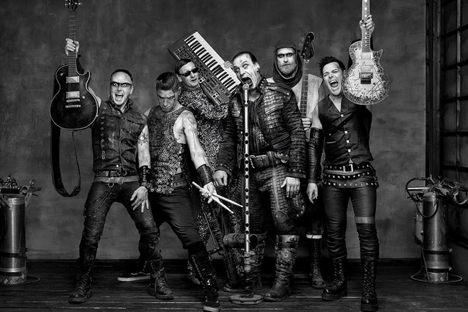

Имя:Rammstein ( Рамштайн )
Дата рождения: 1994 г.
Место рождения: Берлин, Германия
Деятельность: рок-группа
Имя:Rammstein ( Рамштайн )
Дата рождения: 1994 г.
Место рождения: Берлин, Германия
Деятельность: рок-группа
Мало людей на свете, которые не знают о культовой немецкой группе Rammstein, а у некоторых название этого коллектива прочно ассоциируется с Германией. Это вовсе неудивительно, ведь музыканты радуют своих поклонников песнями, концертами и клипами c 1994 года. В 2014-м они отметили 20-летний юбилей.
Если говорить об участниках группы «Раммштайн», то не хватит и книги, ибо биография каждого музыканта насыщена интересными фактами. Например, создатель коллектива и по совместительству гитарист Рихард Круспе раньше занимался борьбой, а фронтмен Тилль Линдеманн серьезно увлекался плаванием. У него была возможность выступить на Олимпиаде, однако из-за травмы мышц живота о спортивной карьере пришлось забыть.
Что касается истории группы, то коллектив образовался в Берлине, произошло это событие в январе 1994 года. Однако все началось гораздо раньше. Дело в том, что гитарист Рихард Круспе с детства мечтал стать рок-звездой и покорить своей музыкой весь мир.
Будучи ребенком, Рихард фанател от американской группы KISS. Плакат с музыкантами, которые впечатляли не только своими песнями, но и вызывающим макияжем, висел у мальчика в комнате и был любимым предметом интерьера. Будучи за границей, Круспе приобрел гитару, чтобы продать ее на территории ГДР за неплохие деньги, но когда незнакомая девушка попросила парня показать пару аккордов, тот решил впечатлить ее.

Пытаясь заинтересовать слушательницу, Рихард неразборчиво и интуитивно перебирал гитарные струны одну за другой. К его удивлению подобная импровизация впечатлила фройляйн, которая похвалила молодого человека, сказав, что у него есть потенциал. Это стало своего рода толчком и мотивацией для Круспе, да и к тому же он понял, что девчонки без ума от гитаристов.
Парень понимал, что научиться игре самостоятельно будет сложно, поэтому поступил в музыкальную школу, где удивлял преподавательницу своим талантом и стремлением: одержимый гитарными ритмами, Круспе занимался по шесть часов в день.
Неудивительно, что вскоре Рихард обзавелся целью: он захотел создать рок-группу, тем более представление об идеальном музыкальном коллективе он уже имел. Вдохновленный любимой KISS, молодой человек мечтал соединить хард-рок с электронным звучанием индастриала.
Первоначально Круспе выступал у малоизвестных музыкантов, начав карьеру в Orgasm Death Gimmick. Но затем судьба связала его с Тиллем Линдеманном, который был барабанщиком в группе First Arsch. Мужчины стали тесно общаться, и вскоре Рихард уговорил Тилля стать участником новой рок-группы.
К слову, Линдеманн был удивлен настойчивостью своего приятеля, ибо не считал себя талантливым музыкантом: когда Тилль был маленьким, мама говорила ему, что вместо пения он издает только шум. Однако, став полноправным участником Rammstein, Тилль не опускал руки и пытался добиться нужного звучания.
Известно, что вокалист стажировался у звезды оперного театра. Для развития диафрагмы Линдеманн пел, подняв над головой стул, а также отжимался, что позволило добиться значительных результатов. Далее к Круспе и Линдеманну присоединились басист Оливер Ридер и барабанщик Кристоф Шнайдер.
Таким образом, в столице Германии образовалась группа «Раммштайн». Тогда парни еще не знали, что название рок-коллектива прогремит на весь мир, ибо до середины 1994 года они выступали только на тусовках и вечеринках. Через год к ребятам присоединились остальные участники - гитарист Пауль Ландерс и клавишник Кристиан Лоренс, запоминающийся своим эксцентричным поведением
Примечательно то, что первоначальный состав группы ни разу не менялся и сохранился по сей день, что редко встречается на рок-сцене. Хотя идея о создании музыкального коллектива принадлежит Рихарду Круспе, а центром внимания поклонников является Линдеманн, нельзя сказать, что остальные участники «Раммштайна» остаются в тени.
Если говорить о названии группы, то оно возникло спонтанно. Стоит отметить, что немцы любят составлять различные неологизмы, этим и занялись Кристоф Шнайдер, Пауль Ландерс и Кристиан Лоренц, когда придумывали имя для своего рок-коллектива.
«Мы писали Rammstein с двумя «м», потому что не знали, что название города пишется с одной. Поначалу мы назвали себя так в шутку, но название прилипло к нам как нелюбимая кличка. Мы ещё искали: Milch (Молоко), или Erde (Земля), или Mutter (Мать), но название уже закрепилось», - признавались ребята в интервью.
Кстати, слово «Раммштайн» переводится на русский язык как «таранный камень», поэтому некоторые поклонники проводят аналогию с Rolling Stones.

Уже прилипшая к ребятам кличка сыграла с ними злую шутку. Дело в том, что в 1988 году в городке Рамштайн проходило авиашоу. Три военных самолета проводили показательные выступления, но вместо красивого маневра в воздухе случилось столкновение, и машины рухнули на толпу людей.
Музыканты узнали об этой трагедии после того, как уже дали название коллективу. Став популярной, группа долгое время дистанцировалась от взаимосвязи между ее названием и местом трагедии. Но порой, чтобы не отвечать на уже надоевшие вопросы, «раммы» говорят, что таким образом отдали дань погибшим в катастрофе.